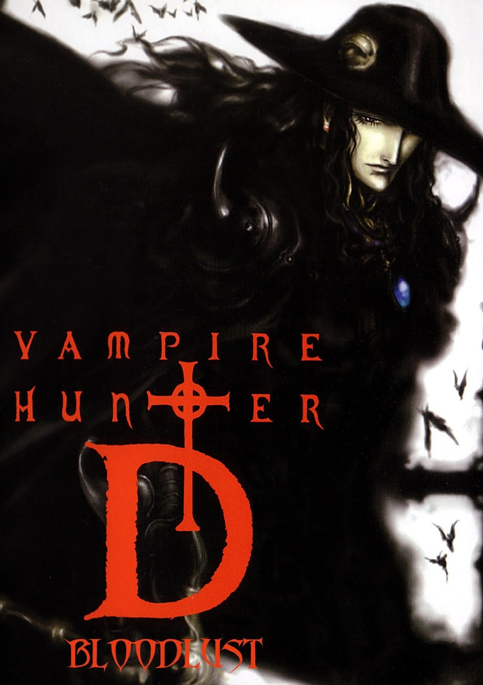

| Vampire Hunter D: Bloodlust | |
|---|---|
| Trailer | Original Poster |
|  | |
|
- Plot : In the middle of the night, Charlotte Elbourne,
a young human woman, is abducted by Baron Meier Link, a vampire nobleman. Charlotte's wealthy father, John, hires D, a dhampir, to rescue her, dead or alive. - Japenese title : 吸血鬼ハンターD ブラッドラスト - Genre : Steampunk / Fantasy - Directed by : Yoshiaki Kawajiri - Music by : Marco D'Ambrosio (full OST > HERE) - Running time : 1h45m - Production : Madhouse animation studio - Release date : July 2000 |
|